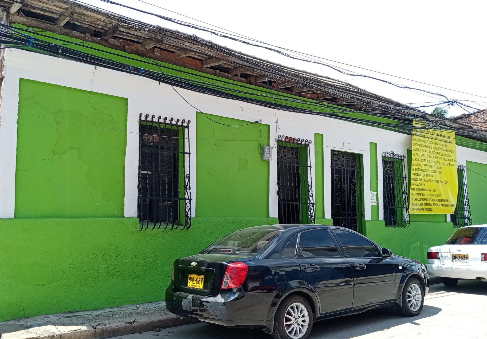

RESTAURANTE DONDE MILE


Esta casa cuenta con una arquitectura vernácula y tiene características propias de la casa de bahareque indígena, pues tenía techo de paja. La vivienda tiene influencia colonial que se evidencia en los muros gruesos, molduras sencillas y la ventilación de los espacios que es mediante celosías, las cuales son elemento de herencia española.
El acceso de la estación del Tranvía tiene puertas de madera, en la parte alta posee rejillas en madera para ventilar, tiene en sus puertas vidrio para la iluminación. Las puertas están flanqueadas por elementos propios del periodo republicano como almohadillados de mortero, mientras que en la parte superior cuenta con un parasol compuesto de estructura metálica y techo de zinc, propio de la arquitectura antillana.
Las manos que atizan los fogones y dan palote a las ollas, son de las mujeres y los hombres que por años han decidido rendir homenaje a su herencia culinaria. Son las vidas de familias que llegaron al barrio y desde entonces no han dejado de transformar los alimentos para cocinar singulares preparaciones, de aromas, colores y sabores que evocan, principalmente, lo afro en Barrio Abajo.
Los ritos y rituales hacen parte del calendario cultural del bajero. Lo festivo y lo sacro se mezclan para ponerle ritmo a la vida y generar así un escenario propicio que acerca a los feligreses a un encuentro con lo espiritual. Las calles se convierten en las arterias que dan vida a la procesión de santos y vírgenes como expresiones de la cultura popular.
Esta ventana posee una moldura en cemento, es esbelta y tiene énfasis en la ventilación, por eso posee doble rejillas junto con una celosía esculpida en la madera que permitían la ventilación de los espacios de la casa con las ventanas cerradas; esta posee un cerramiento en hierro con adornos tradicionales y su mampostería es en muro de arcilla doble y pañete en mortero.
Con los años, el paisaje y la vida cultural de Barrio Abajo se ha transformado. Sin embargo, aún permanece en la memoria colectiva la nostalgia por algunos sectores que en épocas pasadas gozaron de gran popularidad y aceptación; lugares donde alguna vez se cultivó la historia de una comunidad que nació frente al río.
Este inmueble actualmente representa un hito entre la comunidad bajera por el uso que presenta hoy en día, el cual corresponde a un restaurante de comida casera conocido como: "Donde Mile" reconocido principalmente por la variedad y calidad de la comida de mar que sirven a sus comensales.